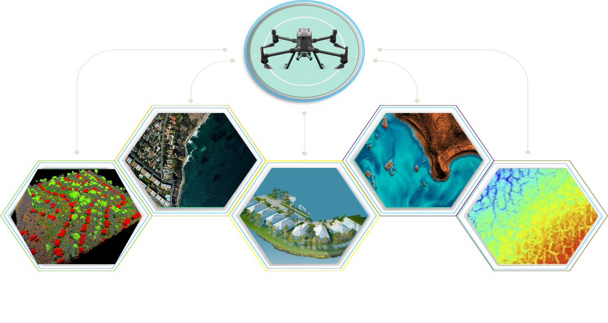

OBJECTIVE OF PROJECT
The objective of the project is to delineate, map and benchmark the costal hazard line.
| DELINEATE | MAP | BENCHMARK | COASTAL HAZARD LINE |
| Delineate the coastal hazard line all along the mainland coast of Maharashtra | Generation of fine resolution coastal erosion vulnerability map . | Establishing the Bench mark all along the Maharashtra coastline | Estimate the status of currently protected and unprotected coastline. |
TECHNOLOGY
LIDAR has been used on both coasts in numerous projects and a wide range of applications.
BATHYMETRY is the study of underwater depth of ocean floors (seabed topography)
LIDAR TECHNOLOGY
Airborne light detection and ranging (lidar) is a remote sensing technology that is proving increasingly beneficial in a variety of ocean and coastal mapping applications. Lidar systems use pulsed lasers in aircraft to measure ranges to the surface below. The range measurements are combined with position and orientation data to obtain accurate, 3D spatial coordinates (e.g., latitudes, longitudes, and heights) of points on Earth’s surface, as well as elevated features, such as canopy and buildings. In the case of bathymetric lidar, green laser beams are employed for ranging through the water column in order to map bathymetry of shallow coastal waters.
Output By Lidar:

BATHYMETRY TECHNOLOGY
Bathymetry is the study and mapping of the seabed or lakebed. It consists of obtaining measurements of the depth of the ocean or lakes and is equivalent to the mapping of the earth's topography. In general, only limited information is known about seabed and lake beds. Existing maps of the seabed are often low-resolution or obsolete. In this application, Apache is suitable technology as it can measure depths of up to 300 m and provide its exact GNSS position. The data can be used to estimate silt deposits that scour the channel bottom, etc. The seabed level must be accurately measured to determine whether a vessel can make it to the berthing area or whether dredging is required to create adequate depth. The depth level is required in dam and reservoir areas to calculate the capacity of the dam year after year. Due to the constant movement of water through these dams, siltation causes the bed level to rise, which reduces their overall capacity.
OVERVIEW OF PROJECT
.png)